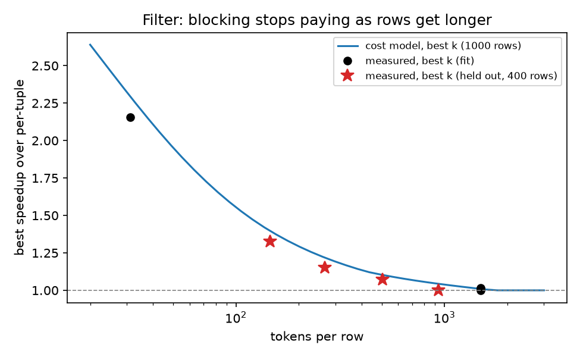

Batching study and cost model v3 · L40S, vLLM 0.29.0, Qwen2.5-7B-Instruct · full write-up: results/analysis/STUDY.md (PR #20)
| Item | Setting | Why it matters for batching |
|---|---|---|
| GPU | 1× NVIDIA L40S 48 GB (Modal), one container per experiment | Sets prefill speed and decode-step time |
| Server | vLLM 0.29.0 OpenAI server, defaults (bf16 weights) | Batches separate requests on its own (continuous batching) |
| Batch limits | max_num_seqs 256, max_num_batched_tokens 2048, max_model_len 32768 | 256 calls run at once; more calls run in waves |
| Prefix cache | On, reset before each trial | Separate calls reuse shared prompt text, so per-tuple is already cheap |
| Model | Qwen2.5-7B-Instruct, temperature 0 | Repeatable answers |
| Measure | 1 warm-up + 3 repeats, median; arms interleaved A,B,A,B | Drift hits all arms equally |
| Workload | Op | Rows | Tokens/row |
|---|---|---|---|
| SemBench movie reviews: “clearly positive?”, true selectivity 7–92% | filter | 100–1865 | ~31 |
| Review pairs: “opposite sentiment?”, match rate 10–90% | join | 16²–64² | ~31/side |
| Reviews: “main reason, one sentence” | map | 100–500 | ~31 |
| ContractNLI: “contract entails hypothesis?” | filter | 400 | ~1500 |
| Contract × clause | join | 24×8 | ~1600 + 15 |
| ContractNLI cut to a window that keeps the evidence | filter | 400 | 146–937 |
| filter→join, filter→map, map→filter | pipe | 50–1000 | ~31 |
| join→filter: “same sentiment?” then “both positive?” | pipe | 32×32 | ~31/side |
Correct answers come from dataset labels (SemBench sentiment, ContractNLI entailment). Maps have no labels, so they are scored by ROUGE-1 against per-tuple output. Rows over 512 tokens count as long.
When does a block beat separate requests through vLLM?
vLLM already batches separate requests and caches shared prompt text. A block saves only the work each call repeats (instructions, answer format, extra waves). In exchange, one call has to write k answers one after another.
| Case | Block? | Measured |
|---|---|---|
| Short rows, short answers (filter, join), many rows | Yes, k 2–8 | filter 2.2x (1500 rows, k 6–7); join 1.5x (k 2–3) |
| Few rows (50–100) | Barely | 1.0–1.1x; operator startup dominates |
| Medium rows (146–505 tok) | A little, k 2–3 | 1.33x at 146, 1.15x at 267, 1.07x at 505 tokens |
| Long rows (937–1500 tok) | No | ≤1.02x; reading the row dominates. Recall 0.70→0.45 |
| Long answers (map) | No | 0.37–0.9x; one call writes all k answers |
| Large blocks (k ≥ 16) | No | 0.47–0.69x, and accuracy falls |

Best filter speedup vs row length: model (line), fitted runs (dots), held-out sweep (stars).
How should blocks move through filters that shrink rows and joins that expand them?
| Observation | Evidence |
|---|---|
| Blocks stay full: rows are held until a block has k of them; only the last one is partial | 100% fill in every pipeline run checked |
| A filter's block size changes the next stage's work | A blocked filter passes 1.2–4x more rows to the join (recall 0.63 → 0.79) |
| Block the expensive stage, not the cheap one before it | Filter per-tuple + join k=2 was fastest (1.45x) |
| Blocking a neighbour makes a per-tuple map cut off and rerun answers | 12–56% of map rows rerun |
| Block joins repeat the left row in every pair | ~3.3x prompt tokens on long left rows |
| Stages on one GPU add up | L ≈ 0.98 × Σ stage latencies |
| Join→filter: small blocks in both stages win | join 2, filter 2–3: 1.21–1.40x |
| A join's recall depends on its wording, and per-tuple can fail where blocks don't | “Same sentiment?”: per-tuple join kept 0–8% of true pairs, blocks 23–49% |
Rules: (1) choose all stages' block sizes together, because a filter's k sets how many rows the next stage gets (1.38x jointly vs 1.31x per stage); (2) keep blocks full; (3) group block-join pairs by left row (proposed); (4) fix map output-length estimation before blocking around maps (proposed).
| filter→join | s10 | s25 | s50 | s75 | s90 |
|---|---|---|---|---|---|
| True positives (of 100) | 7 | 30 | 48 | 68 | 92 |
| Passed, filter per-tuple | 2 | 16 | 28 | 42 | 58 |
| Passed, filter blocked | 8 | 23 | 36 | 50 | 78 |
No fixed rule works, so the model has a fixed shape whose constants are fitted on measured runs (weighted least squares on relative error). Latency of one stage with N items at block size k:
L = g[op] + α·P + (β + tail[op])·W·D + γ·C·D + δ·C·p²| Term | Meaning | Fitted (L40S) |
|---|---|---|
| g | Fixed cost to start the operator | map 0.29 s; filter/join ≈ −0.05 s |
| α·P | Reading prompts: P = prompt tokens not served by the cache | 0.79 s / 10k tok |
| β·W·D | Writing answers: W waves of ≤256 calls × D tokens per answer | 24.8 ms / step (+11 ms map) |
| γ·C·D | Bigger running batch slows each token | 0.1 ms / token |
| δ·C·p² | Attention on long prompts (p in 1k tokens) | 1.77 ms |
Calls C = N for per-tuple and ⌈N/k⌉ for blocks. Answer length D grows with k: filter −2.6+4.5k, join −2.6+4.6k, map 63+14.7k tokens. Prompt tokens come from the real prompt template. Pipelines pass row counts from stage to stage: a filter passes N·(recall(k)·s + fpr(k)·(1−s)) for true selectivity s, a join keeps pairs the same way, and map reruns are added. Total L = 0.98·Σ stages.
Fitted on 45 runs (173 single-operator arms, 75 pipeline arms). Error: 4.3% single operator, 13% pipelines, 6.3% on the 15 held-out picks.
Algorithm (input: the pipeline's operators, row count and token lengths, a selectivity estimate):
Example (filter→join, 100×32 rows, true s = 0.68). The model predicts 10.9 s for filter per-tuple + join k=2; measured 10.4 s, 1.45x, which was the fastest arm. Blocking the filter passes more rows and makes the join slower.
At run time (proposed): re-estimate the pass rate as rows go by, π̂ = (passed + a)/(seen + a + b), and re-plan the stages not yet started. Switch only if the gain is over 5%, and only if the same choice wins at π̂ ± 2σ.
Compared with Trummer (arXiv 2510.08489): his model minimises token cost, so bigger blocks always cost less. On a local GPU, latency rises past k ≈ 8, so his rule would pick our worst sizes. His left×right join layout is worth adopting.
| Design | Setting |
|---|---|
| Held out | Sizes, selectivities, row lengths and pipeline shapes not in the fit. The model picks block sizes before each run (picks frozen in algorithm_choices.json) |
| Rounds | validate3: filter 1500 rows; join 48×48; filter→join; filter→map; map→filter. validate-jf (jf): join→filter at 4 selectivities. validate4: long-row filter and join; filters at 146 / 267 / 505 / 937 tokens per row |
| Strategies | Per-tuple; fixed k 4 / 16 / 32 (same k for every stage); best in isolation; algorithm; algorithm + accuracy guard |
| Oracle | Fastest of all arms run, including a grid around the pick |
| Metrics | Speedup vs per-tuple (geometric mean), regret = how much slower than the oracle, F1 change vs per-tuple |
| Speedup | validate3 | jf | validate4 | All 15 | Regret |
|---|---|---|---|---|---|
| Per-tuple | 1.00x | 1.00x | 1.00x | 1.00x | 29% |
| Fixed k=4 | 1.08x | 1.25x | 0.82x | 1.00x | 40% |
| Fixed k=16 | 0.69x | 0.89x | 0.86x | 0.80x | 82% |
| Fixed k=32 | 0.47x | 0.62x | 0.73x | 0.58x | 184% |
| Best in isolation | 1.31x | 1.25x | 1.08x | 1.20x | 5.5% |
| Algorithm (v3) | 1.38x | 1.17x | 1.07x | 1.19x | 5.7% |
| Algorithm + guard | 1.17x | 1.07x | 1.07x | 1.10x | 15% |
| Oracle | 1.45x | 1.31x | 1.09x | 1.26x | 0% |
| Experiment | Pick | Speedup | Fastest | Regret |
|---|---|---|---|---|
| Filter, 1500 short rows | k 6 | 2.23x | k 7, 2.26x | 1% |
| Join, 48×48 | k 2 | 1.52x | k 3, 1.54x | 1% |
| Filter→join, s75 | 1, 2 | 1.45x | same | 0% |
| Filter→map, 250 | per-tuple | 1.00x | 2, 1: 1.05x | 5% |
| Map→filter, 200 | per-tuple | 1.00x | 1, 2: 1.24x | 24% |
| Join→filter (4) | ≈10, 2 | 1.09–1.22x | 2, 2–3: 1.21–1.40x | 7–16% |
| Long-row filter, 300 | per-tuple | 1.00x | same | 0% |
| Long-row join, 40×8 | per-tuple | 1.00x | same (k 4: 0.21x) | 0% |
| Rows of 146 / 267 tok | k 2 | 1.27x / 1.12x | k 3: 1.33x / 1.15x | 4% / 2% |
| Rows of 505 / 937 tok | k 2 | 1.05x / 1.00x | k 3 / k 2 | 2% / 0% |
Misses. (1) Map→filter: per-tuple was predicted at 5.3 s and took 7.1 s, with repeats varying by ~1 s. (2) Join→filter: the model assumed per-tuple join recall of 0.69 from the opposite-sentiment joins, but the same-sentiment join kept only ~5% of true pairs per-tuple. It planned with the wrong pair counts and picked join ≈10 instead of 2, losing to fixed k=4 in this round. On long rows it correctly chose not to block, and predictions were within 1–8%.
Fixed k=16/32 arms that didn't fit the context window on long rows are left out of their speedups.
One GPU and one model: other hardware needs a refit on a smaller sweep, but the model's shape stays the same. The latency-first pick loses F1 on joins and contract filters (−0.1 to −0.25), so use the guard when accuracy matters. The model was given each workload's true selectivity and reuses recall from past joins of the same kind. Both have to be estimated in a real run (live re-estimation is proposed, not built). Untested: sending a partial block early instead of waiting for it to fill.